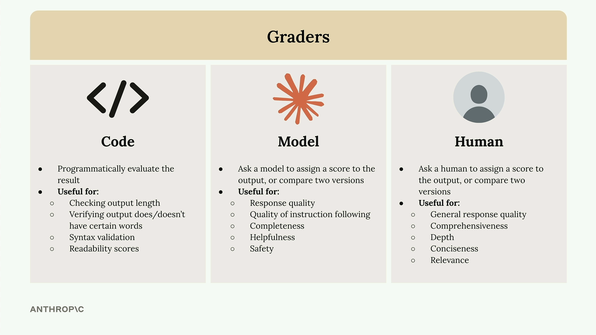
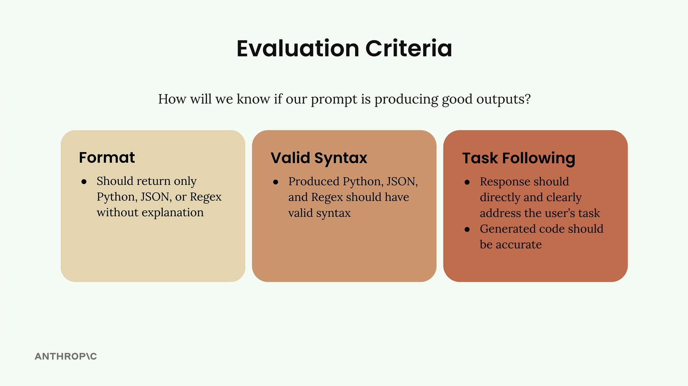
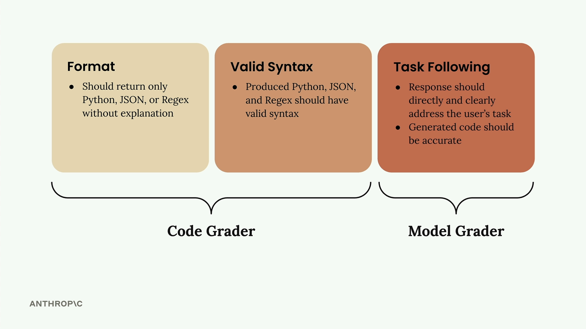

Оценка с помощью модели
Чему научитесь
Видео 10:01 и текст урока
К концу урока вы сможете:
- назвать три типа грейдеров и выбрать подходящий под критерий;
- сформулировать критерии оценки для промпта;
- написать грейдер на основе модели и посчитать средний балл.
Видео и текст урока.
Смотреть урок на Skilljar Model based grading · 10:01В процессе оценки промптов системы оценки (грейдеры) дают объективный сигнал о качестве результата. Грейдер принимает ответ модели и возвращает измеримую обратную связь — обычно число от 1 до 10, где 10 означает высокое качество, а 1 — низкое.
Типы грейдеров

Есть три основных подхода к оценке ответов модели:
- грейдеры на коде — программно проверяют ответ по вашей логике;
- грейдеры на модели — оценивают качество с помощью другой ИИ-модели;
- люди-оценщики — люди вручную просматривают и оценивают ответы.
Грейдеры на коде
Грейдер на коде позволяет реализовать любую программную проверку, какую только можно придумать. Типичные применения:
- проверка длины ответа;
- проверка, есть или нет в ответе определённые слова;
- проверка синтаксиса JSON, Python или регулярных выражений;
- оценки удобочитаемости.
Единственное требование — код должен вернуть пригодный сигнал, обычно число от 1 до 10.
Грейдеры на модели
Грейдер на модели отправляет исходный ответ в ещё один вызов API для оценки. Такой подход даёт огромную гибкость в оценке:
- качества ответа;
- качества следования инструкциям;
- полноты;
- полезности;
- безопасности.
Люди-оценщики
Люди дают наибольшую гибкость, но это долго и утомительно. Они полезны для оценки:
- общего качества ответа;
- всесторонности;
- глубины;
- лаконичности;
- уместности.
Критерии оценки

Прежде чем писать грейдер, нужны чёткие критерии оценки. Для промпта, который генерирует код, можно сосредоточиться на:
- формате — ответ должен содержать только Python, JSON или Regex, без пояснений;
- корректном синтаксисе — сгенерированный код должен быть синтаксически правильным;
- следовании задаче — ответ должен прямо решать задачу пользователя точным кодом.

Первые два критерия хорошо проверяются кодом, а следование задаче лучше оценивать моделью — благодаря её гибкости.
Пишем грейдер на модели
Вот как построить функцию-грейдер на основе модели:
def grade_by_model(test_case, output):
# Create evaluation prompt
eval_prompt = """
You are an expert code reviewer. Evaluate this AI-generated solution.
Task: {task}
Solution: {solution}
Provide your evaluation as a structured JSON object with:
- "strengths": An array of 1-3 key strengths
- "weaknesses": An array of 1-3 key areas for improvement
- "reasoning": A concise explanation of your assessment
- "score": A number between 1-10
"""
messages = []
add_user_message(messages, eval_prompt)
add_assistant_message(messages, "```json")
eval_text = chat(messages, stop_sequences=["```"])
return json.loads(eval_text)
Ключевая идея — просить вместе с баллом сильные стороны, слабые стороны и обоснование. Без этого контекста модели склонны ставить средние оценки — около 6.
Встраиваем оценку в процесс
Обновите функцию прогона тестового случая, чтобы она вызывала грейдер:
def run_test_case(test_case):
output = run_prompt(test_case)
# Grade the output
model_grade = grade_by_model(test_case, output)
score = model_grade["score"]
reasoning = model_grade["reasoning"]
return {
"output": output,
"test_case": test_case,
"score": score,
"reasoning": reasoning
}
Наконец, посчитайте средний балл по всем тестовым случаям:
from statistics import mean
def run_eval(dataset):
results = []
for test_case in dataset:
result = run_test_case(test_case)
results.append(result)
average_score = mean([result["score"] for result in results])
print(f"Average score: {average_score}")
return results
Так вы получаете объективную метрику, которую можно отслеживать при доработке промпта. Пусть грейдеры на модели бывают несколько капризны, они дают стабильную точку отсчёта для измерения улучшений.
Дальше
Следующий урок добавляет грейдер на коде — для формата и синтаксиса — и объединяет его балл с оценкой модели.
Оригинал урока: Model based grading.